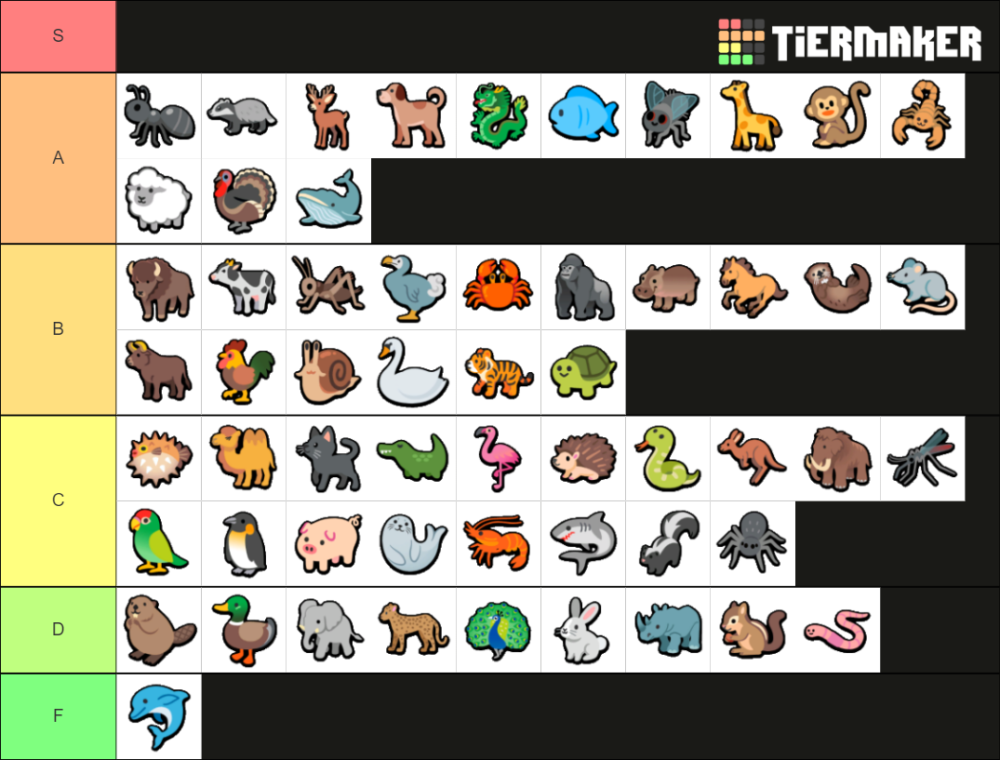

Super Auto Pets
Tier list:
Look out for:
We want to build our compositions around the core pets for each build category. When we are able to procure e.g. an early Turkey then you should definitely walk the Token Zoo route.- (T2) Dodo -> Dodo Comp
- (T4) Monkey -> Dodo or Tank Comp
- (T5) Turkey -> Token Zoo
- (T6) Dragon -> Tank Comp
Stables in any comp:
- (T2) Meat Bone
- (T5) Scorpion
- (T5) Chocolate
- (T6) Melon
- (T6) Steak
Token Zoo:
Tier 1: Horse, Cricket, Honeybee
Tier 2: Dog, Spider
Tier 3: Sheep, Whale
Tier 4: Deer, Rooster
Tier 5: Turkey
Tier 6: Tiger
Tank Compositions
Tier 1: Anything that can buff Tier 2: Dodo, Dog, Crab Tier 3: Giraffe Tier 4: Bison, Hippo, Monkey, Penguin, Worm Tier 5: Cow, Rhino, Scorpion Tier 6: Dragon, Leopard, Melon
Early on keep an open mind for all kinds of builds, there is no definite early animal for the Tank route. Later on, when we get a Bison + level 3 or a Hippo with an support animal like Monkey, Penguin or Giraffe then you might want to consider going the tank route. In the late game see if you can find a dragon, which makes buffing your animal up a lot easier.